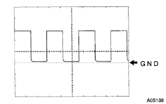

EFIシステム ＥＣＵ端子配列 |
| 端子名 (端子番号) | 入出力 | 測定条件 | 基準 [V] |
|---|---|---|---|
| BATT←→E1 (D3←→B7) | 入力 | 常時 | 9-14 |
| +B←→E1 (D1←→B7) | 入力 | エンジン停止 イグニッションスイッチON | 9-14 |
| VCC←→E1 (Ａ18←→Ｂ7) | 出力 | エンジン停止 イグニッションスイッチON | 4.5-5.5 |
| ＩＧＴ1←→Ｅ1 (Ａ8←→Ｂ7) | 出力 | アイドル回転時 | パルス発生 (波形1) |
| IGT2←→E1 (A9←→B7) | 出力 | アイドル回転時 | パルス発生 (波形1) |
| IGT3←→E1 (A10←→B7) | 出力 | アイドル回転時 | パルス発生 (波形1) |
| IGT4←→E1 (A11←→B7) | 出力 | アイドル回転時 | パルス発生 (波形1) |
| IGF1←→E1 (A23←→B7) | 入力 | アイドル回転時 | パルス発生 (波形1) |
| NE+←→NE- (A27←→A34) | 入力 | アイドル回転時 | パルス発生 |
| G2+←→NE- (A26←→A34) | 入力 | アイドル回転時 | パルス発生 |
| ＃1←→E1 (A1←→B7) | 出力 | アイドル回転時 | パルス発生 (波形2) |
| ＃2←→E1 (A2←→B7) | 出力 | アイドル回転時 | パルス発生 (波形2) |
| ＃3←→E1 (A3←→B7) | 出力 | アイドル回転時 | パルス発生 (波形2) |
| ＃4←→E1 (A4←→B7) | 出力 | アイドル回転時 | パルス発生 (波形2) |
| VG←→EVG (B24←→B32) | 入力 | アイドル回転時 | 1.0-1.5 |
| OXL1←→E1 (B23←→B7) | 入力 | オキシジエンセンサ暖機後、2500r/min一定回転時 | パルス発生 (波形3) |
| KNKL←→E1 (B1←→B7) | 入力 | 4000r/minで保持 | パルス発生 |
| SPD←→E1 (C17←→B7) | 入力 | 約20km/hで走行時 | パルス発生 |
| THW←→E1 (A19←→B7) | 入力 | 冷却水温60-120°C | 0.2-1.0 |
| THA←→E1 (A20←→B7) | 入力 | 吸気温度0-80°C | 0.5-3.4 |
| W←→E1 (D11←→B7) | 出力 | アイドル回転時 (チェックエンジンランプ消灯中) | 9-14 |
| W←→E1 (D11←→B7) | 出力 | E.F.I.ウオータテンパラチヤコネクタを切り離す (チェックエンジンランプ点灯中) | 0-3 |
| STA←→E1 (B9←→B7) | 入力 | クランキング中 | 6以上 |
| VTA←→E1 (A21←→B7) | 入力 | スロットルバルブ全閉 | 0.3-1.0 |
| VTA←→E1 (A21←→B7) | 入力 | スロットルバルブ全開 | 3.2-4.9 |
| RSD←→E1 (A5←→B7) | 出力 | アイドル回転時 (エアコンスイッチ OFF→ON) | パルス発生 (波形4) |
| STP←→E1 (C19←→B7) | 入力 | ストップランプスイッチ ON | 7.5-14 |
| STP←→E1 (C19←→B7) | 入力 | ストップランプスイッチ OFF | 0-1.5 |
| HTL←→E1 (B4←→B7) | 出力 | アイドル回転で5秒以上経過 | 0-3 |
| HTL←→E1 (B4←→B7) | 出力 | エンジン停止 イグニッションスイッチ ON | 9-14 |
| MVG←→E1 (C2←→B7) | 出力 | エンジン停止、イグニッションスイッチ ON | 0-1.5 |
| MVG←→E1 (C2←→B7) | 出力 | 上記状態からアクセルペダル全開→全閉3秒間 | 9-14 |
| PRG←→E1 (A12←→B7) | 出力 | エンジン停止 イグニッションスイッチ ON | 9-14 |
| PRG←→E1 (A12←→B7) | 出力 | アイドル回転時 | パルス発生 (波形5) |
| FC←→E1 (D10←→B7) | 入力 | カット要求時 | 0-1.5 |
| FC←→E1 (D10←→B7) | 出力 | エンジン停止 イグニッションスイッチ ON | 9-14 |
| FC←→E1 (D10←→B7) | 出力 | アイドル回転時 | 0-3 |
| TACH←→H1 (D5←→B7) | 出力 | アイドル回転時 | パルス発生 (波形6) |
| FAN←→E1 (D7←→B7) | 出力 | 冷却水温94.5°C以下 | 8-14 |
| FAN←→E1 (D7←→B7) | 出力 | 冷却水温96°C以上 | 0-0.5 |
| CF←→E1 (D6←→B7) | 出力 | エンジン停止 イグニッションスイッチ ON | 9-14 |
| TC←→E1 (D20←→B7) | 入力 | エンジン停止 イグニッションスイッチ ON | 9-14 |
| TC←→E1 (D20←→B7) | 入力 | DLC3のTC←→CG短絡 | 0-3 |
| SIL←→E1 (D18←→B7) | 出力 | DLC3にS2000を接続し、通信成立中 | パルス発生 (波形7) |
| OCV+←→OCV- (A15←→A14) | 出力 | エンジン停止 イグニッションスイッチ ON | パルス発生 |
| EMPS←→E1 (B29←→B7) | 入力 | アイドル回転時 ステアリング直進保持 | 9-14 |
| EMPS←→E1 (B29←→B7) | 入力 | アイドル回転時 ステアリング旋回操作 | 0-1.5 |
| WFSE←→E1 (D19←→B7) | 入力 | フラッシュ書き込み時 | 0-1.5 |
| F/PS←→E1 (D14←→B7) | 入力 | 暖機時、アイドル回転時 | パルス発生 (波形8) |
| ALT←→E1 (B18←→B7) | 入力 | エンジン停止時 | 9-14 |
| HP←→E1 (A13←→B7) | 入力 | エアコン ON | 0-1.5 |
| HP←→E1 (A13←→B7) | 入力 | エアコン OFF | 7.5-14 |
| NSW←→E1 (B8←→B7) | 入力 | シフトレバーPまたはNレンジ | 0-3 |
| NSW←→E1 (B8←→B7) | 入力 | シフトレバーPまたはNレンジ以外 | 9-14 |
| IGSW←→E1 (D9←→B7) | 入力 | エンジン停止 イグニッションスイッチ ON | 10-14 |
| MREL←→E1 (D8←→B7) | 入力 | エンジン停止 イグニッションスイッチ ON | 10-14 |
| INHH←→E1 (A15←→B7) | 入力 | デフォッガスイッチまたはテールスイッチ ON | 9-14 |
| INHH←→E1 (A15←→B7) | 入力 | デフォッガスイッチまたはテールスイッチ OFF | 0-1.5 |
| INHL←→E1 (A15←→B7) | 入力 | ブロアスイッチ ON | 9-14 |
| INHL←→E1 (A15←→B7) | 入力 | ブロアスイッチ OFF | 0-1.5 |
| E1←→ボデーアース (B7) | アース | 常時(導通点検) | 導通あり (5Ω以下) |
| E2←→ボデーアース (A28) | アース | 常時(導通点検) | 導通あり (5Ω以下) |
| E01←→ボデーアース (A7) | アース | 常時(導通点検) | 導通あり (5Ω以下) |
| E02←→ボデーアース (A6) | アース | 常時(導通点検) | 導通あり (5Ω以下) |
| EC←→ボデーアース (B28) | アース | 常時(導通点検) | 導通あり (5Ω以下) |
波形1
| 測定端子 | CH1 :IGT1、IGT2、IGT3、IGT4←→E1 CH2 :IGF1←→E1 |
| 計器セット | 5V /DIV、10ms /DIV |
| 測定条件 | 暖機後、アイドル回転時 |
 |
波形2
| 測定端子 | ＃1、＃2、＃3、＃4←→E1 |
| 計器セット | 20V /DIV、20ms /DIV |
| 測定条件 | アイドル回転時 |
 |
波形3
| 測定端子 | OX1A←→E1 |
| 計器セット | 0. 2V /DIV、500ms /DIV |
| 測定条件 | オキシジエンセンサ暖機後、2500r/min一定回転時 |
波形4
| 測定端子 | RSD←→E1 |
| 計器セット | 5V /DIV、1ms /DIV |
| 測定条件 | アイドル回転時、エアコン OFF→ON |
 |
波形5
| 測定端子 | PRG←→E1 |
| 計器セット | 5V /DIV、50ms /DIV |
| 測定条件 | アイドル回転時 |
|  |
波形6
| 測定端子 | TACH←→E1 |
| 計器セット | 5V /DIV、10ms /DIV |
| 測定条件 | アイドル回転時 |
 |
波形7
| 測定端子 | SIL←→E1 |
| 計器セット | 5V /DIV、1ms /DIV |
| 測定条件 | S2000を接続し通信成立 |
波形8
| 測定端子 | F/PS←→E1 |
| 計器セット | 5V /DIV、500ms /DIV |
| 測定条件 | 暖機後、アイドル回転時 |